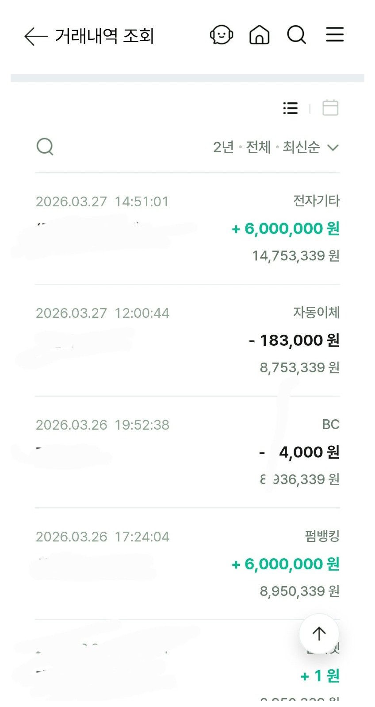

[파산자대출 ] 기대출과다한 상황에서 1200만원승인, 파산면책후대출후기 (필독!!)

안녕하세요 대출후기남깁니다
전 파산면책받은지 4년째인데 급하게 목돈이 필요해서 알아보던중 최규용과장님을 알게되어 대출을 신청했습니다
제가 파산자라 신용이 좋지 않고 기존 대출도(대부 1100만, 자동차할부금 690만) 있어서 대출이 나올까 의아스러웠는데 이틀만에 1200만원을 대출받았습니다 대부업체에서 받은거지만 대출이 되어서 한시름 놓았습니다
저처럼 파산되었다고 포기하지 마시고 최규용과장님과 상담해 보시면 좋은 결과 있을거예요
당일 상담후 3시간도 안되어서 입금되었습니다 총 2곳 600만원씩 두번 나누어 받았습니다 아마 오후에 신청안하고 오전에 했다면 당일에 다 받을수 있었을 거예요
그리고 전 직장인이고 4대보험가입자 입니다 평균 월급은(실수령) 280~290만 사이입니다
그당시 필요했던 서류는 공인인증서만 있으면 손쉽게 폰으로 다 가능했습니다
1. 신분증 앞면 사진 (톡으로)
2. 원초본 (주소이력, 병역사항, 전입일 및 사유, 세대주 등 모두 포함)
3. 건강보험 자격득실 확인서 (과거 전체이력 포함, 건강보험공단 어플이나 홈페이지에서 신청가능)
4. 건강보험 납부 확인서 (현직장 최근 1년 납부내역, 건강보험공단 어플이나 홈페이지에서 신청가능)
5. 급여통장 입출금 거래내역 최근3개월 (해당은행 ARS로 팩스요청)
6. 파산채권자목록 (파산 의뢰하셨던 법무사에 요청)
제가 준비했던 서류 입니다
이상 파산면책자 대출후기였습니다
https://cafe.naver.com/cityman88/310563